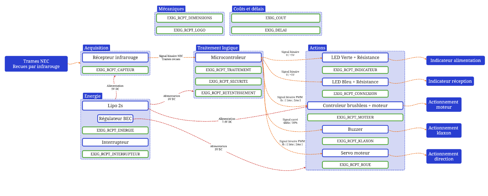
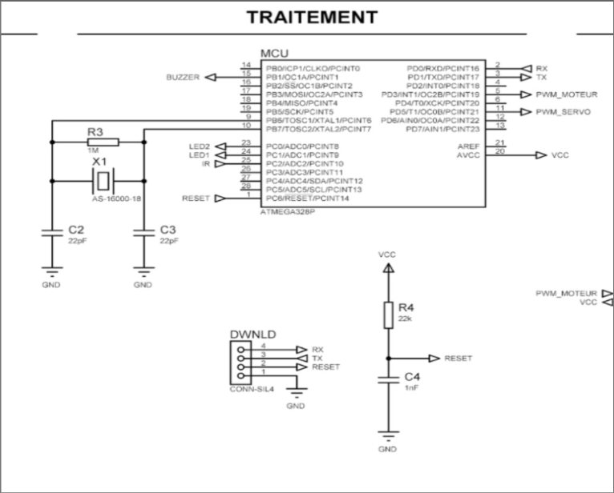
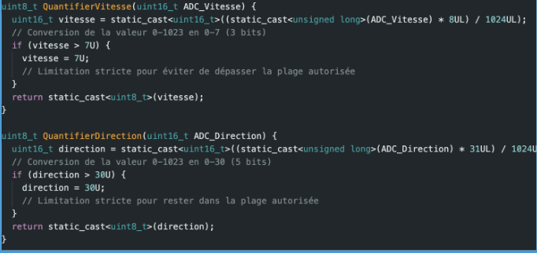

Projet — Kart à hélice télécommandé
Analyse fonctionnelle et architecture globale du kart télécommandé.
Cette partie du projet consiste à analyser le système et à concevoir son architecture globale en respectant le cahier des charges.
Elle mobilise l’étude fonctionnelle, la sélection des solutions techniques et la structuration du système en blocs.
J’ai travaillé sur le bloc énergie et le bloc traitement du récepteur, notamment le dimensionnement et les choix matériels.
Architecture globale du système
Le système a été modélisé sous forme de synoptique à 4 blocs : acquisition, traitement, action et énergie.

Chaque bloc correspond à une fonction précise et respecte les exigences du cahier des charges.
Conception électronique du récepteur
Le cœur du système est basé sur un microcontrôleur ATmega328P. Le schéma électronique a été réalisé sous ISIS.

Il intègre l’alimentation, le RESET, le quartz, les entrées/sorties et les actionneurs.
Traitement des données et communication NEC
Les données analogiques de l’ADC sont compressées pour respecter le protocole NEC.

Conversion et encodage des données avant transmission infrarouge.
Conception du schéma et dimensionnement des composants.
Programmation embarquée et traitement des trames NEC.
Intégration complète du système embarqué.